Research activities
Quick links to the most accessed pages: [Rectification][J-linkage][Multi View Matching][Samantha]
3D Modeling
Main theme: model acquisition from images, structure from motion
| 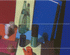 | |||
| 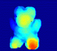 | |||
| 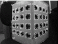 | |||
| 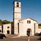 | |||
| 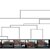 | |||
| 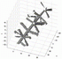 | |||
| 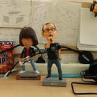 | |||
| 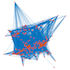 | Global camera-network orientation | ||
 |
Procrustean methods | ||
| 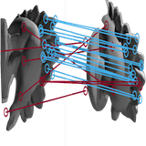 | Multi View Matching | ||
| 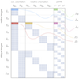 | Bundle adjustment with constraints |
Multiple-model fitting
Fitting multiple instances of a model to data corrupted by noise and outliers
| 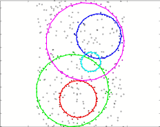 |
Linkage clustering with Jaccard/Tanimoto |
|
| 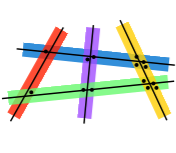 | ||
| 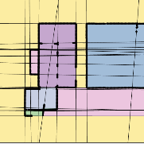 | ||
| 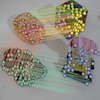 |
Remote Sensing
LIDAR processing
| 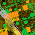 | Full-Waveform LIDAR Data Classification |
Mosaicing - View Synthesis
Methods based on image collineations for mosaicing, background/foreground segmentation, image synthesis.
| 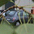 |
Augmented reality
Augmenting underwater images, model tracking, cross-modality.
| 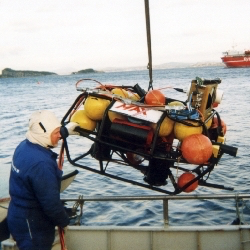 | ||
| 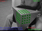 | ||
| Augmented Reality for Remotely Operated Vehicles | ||